Owners spend time asking for updates instead of acting on them.
BabaBuilds ERP
The operating system for growing service businesses
Run the whole business.
Without the chaos.
From proposal to payment, payroll to tax — bring the work, the money, and the next decision into one calm workspace.
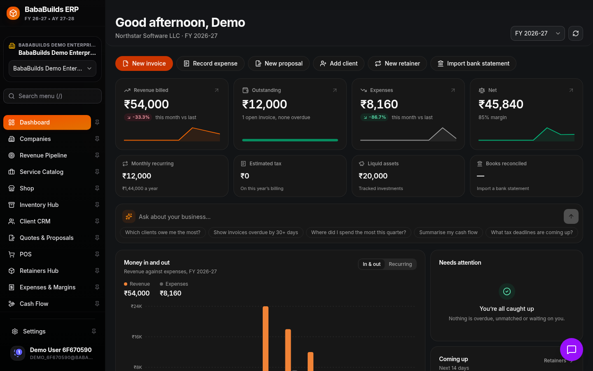
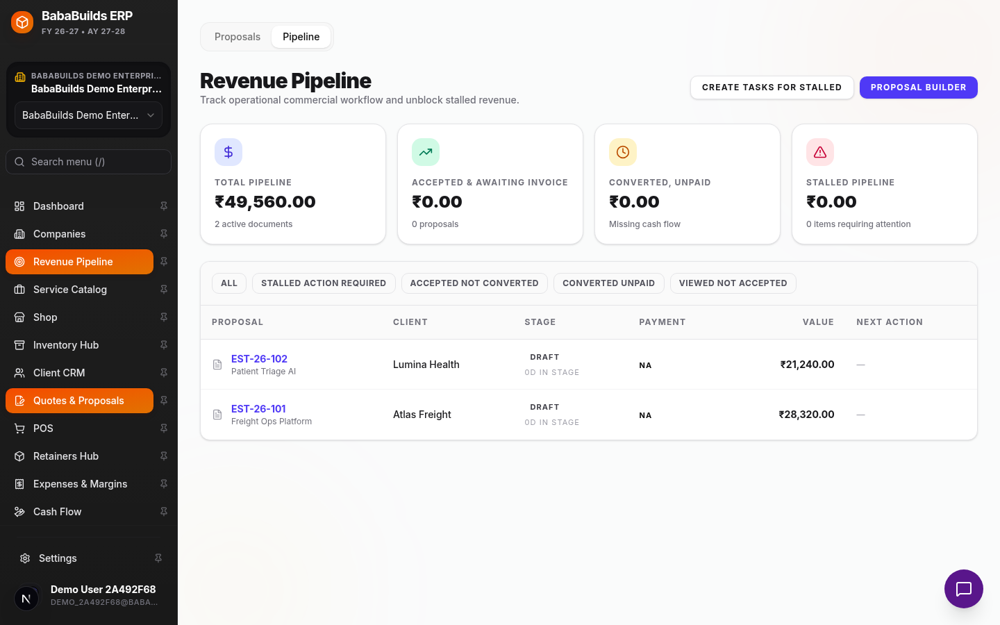
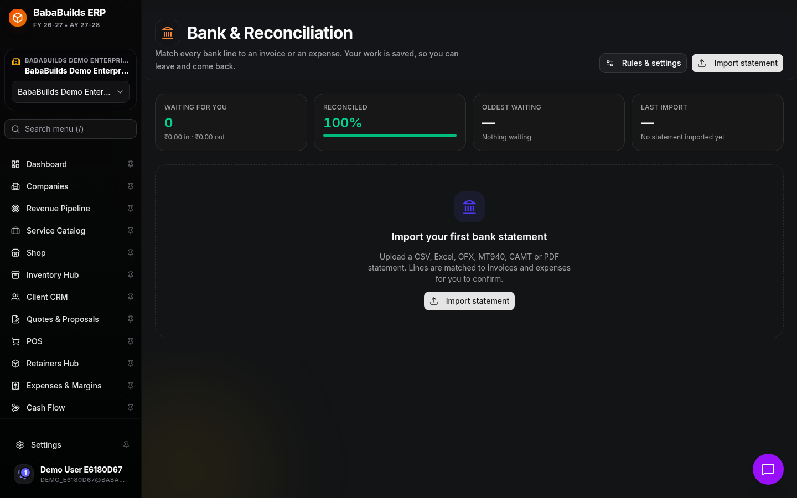
The problem
Growth should not create operational drag
Your team is working.
Your systems are making it harder.
A proposal lives in one tool. Delivery moves to chat. Billing starts in a spreadsheet. Payments arrive somewhere else. Then finance has to reconstruct what happened.
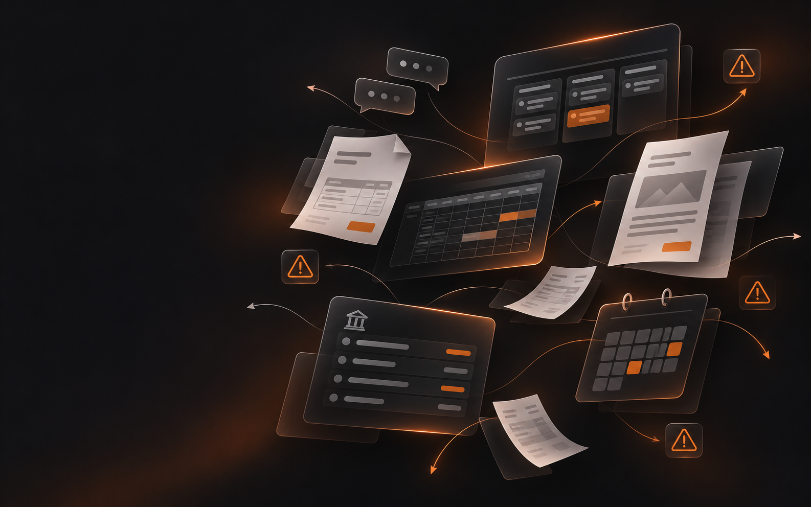
Every re-entry creates delay, inconsistency, and avoidable risk.
Revenue can look healthy while cash, collections, or compliance quietly slip.
The cost is not another subscription. It is the work that falls between them.
The command center
Know what needs attention
One view of the business you are actually running.
Revenue, money owed, expenses, cash signals, recurring income, and work that needs intervention — visible together, not buried across tabs.
Start with the decision
See the numbers and exceptions that change what you do today.
Move directly into action
Create the invoice, expense, proposal, client, retainer, or bank import from the same workspace.
Keep context attached
The client, document, payment, and accounting trail stay connected as work moves forward.
Revenue without leakage
From interest to income
Turn commercial activity into collectible revenue.
Build the proposal, see what is stalled, convert accepted work, create the invoice, and stay close to what is still outstanding.
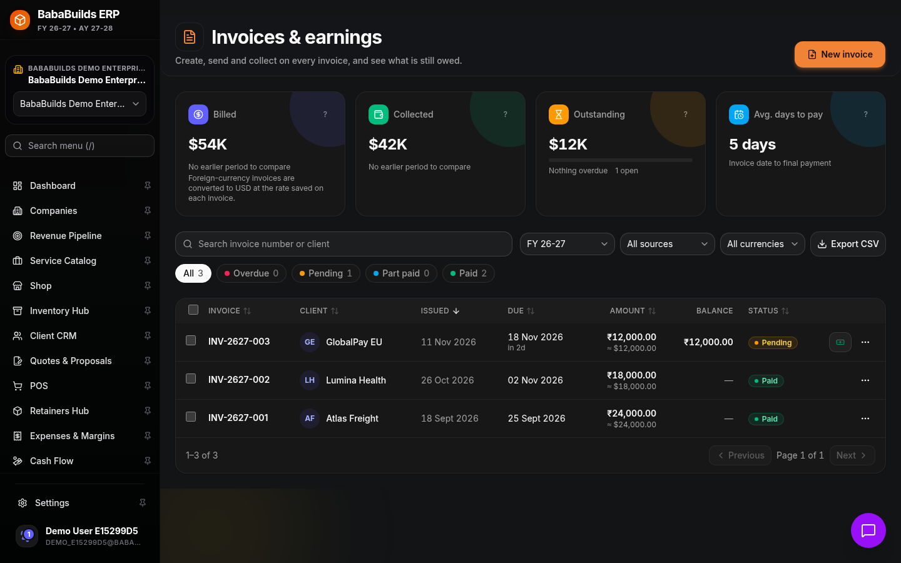
What changes
Sales and finance stop operating from different stories.
- Pipeline clarityKnow what can convert and what needs a next action.
- Faster billingMove from accepted work to invoice without rebuilding the details.
- Collection disciplineSee balances, payment status, and aging before they become surprises.
- Recurring visibilityKeep retainers and repeat revenue inside the same operating rhythm.
Cash discipline
Protect the cash conversion cycle
See what is owed. Understand what is moving. Close the loop.
BabaBuilds gives the owner and finance team a shared view of receivables, cash movement, and the bank evidence behind the books.
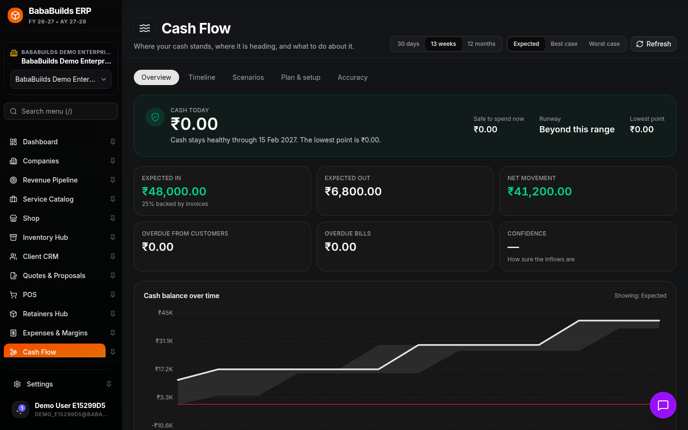
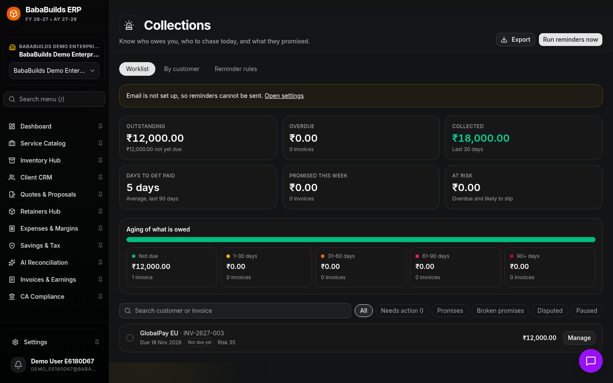
Compliance-ready operations
Make month-end less forensic
Build cleaner books while the work is happening.
Tax readiness, reconciliation, documents, and advisor handoff become part of the operating workflow—not a cleanup project at filing time.
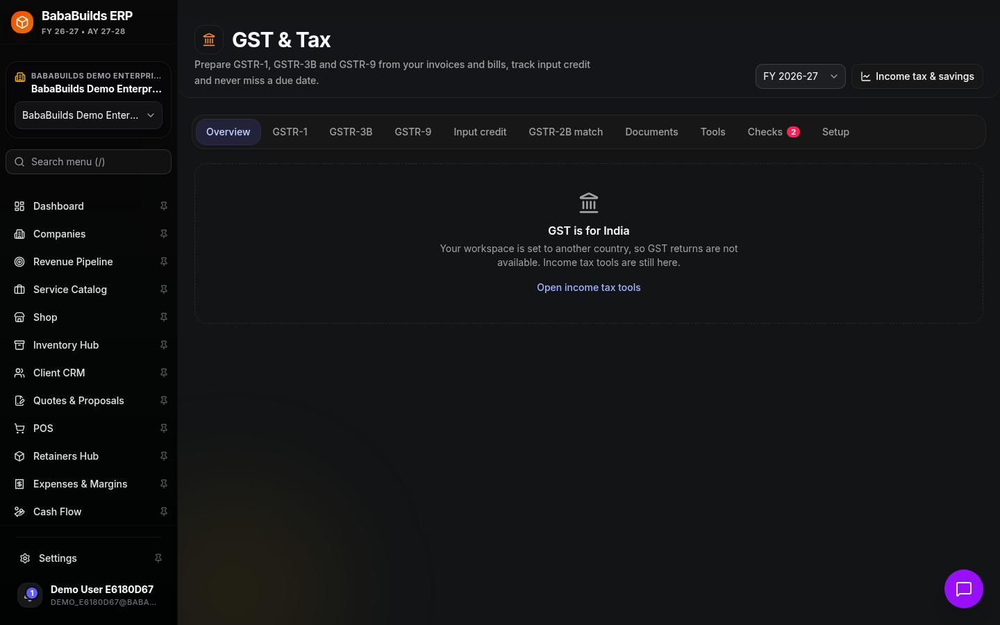
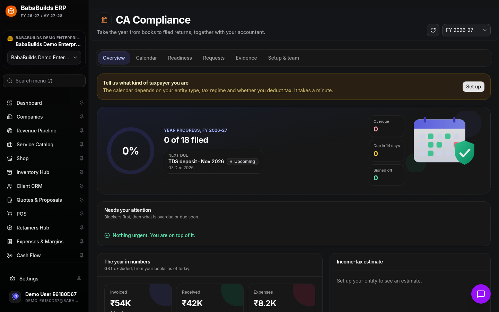
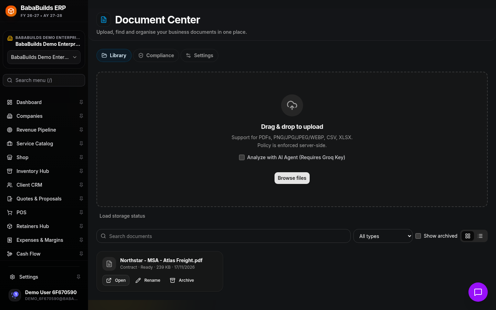
Designed for controlled operations
Workspace-scoped dataRole-aware accessAudit-friendly exportsNon-destructive module controls
BabaBuilds supports structured access and export workflows. Your exact security, retention, and regulatory requirements should be reviewed during implementation.
Beyond finance
One system that can grow with the operation
Bring stock, people, and customer-facing work into view.
Enable the modules you need as the business changes. The workspace adapts without forcing every team into every screen on day one.
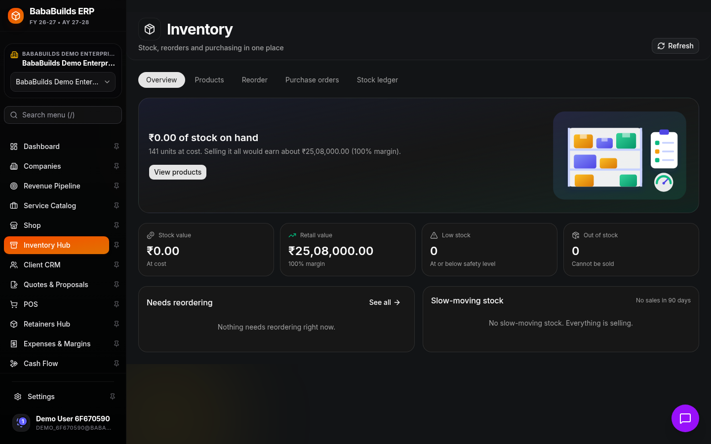
Inventory
Know what you have, what is moving, and what needs replenishment.
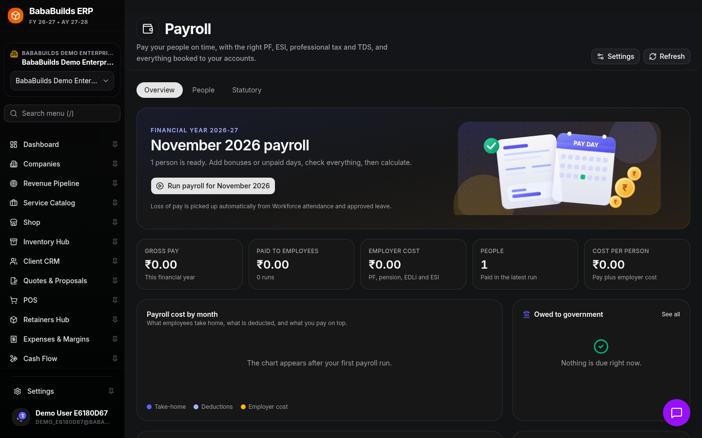
Workforce & payroll
Connect people, attendance, leave, and payroll readiness.
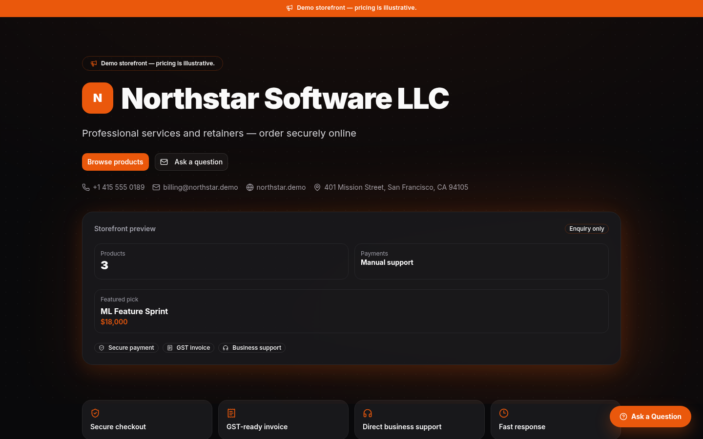
Public storefront
Present services and products through a branded buyer experience.
Start focused. Expand deliberately.
Optional modules preserve the underlying data when disabled, so adoption can follow the way your business actually matures.
The operating rhythm
A connected trail from promise to proof
Every step should make the next one easier.
BabaBuilds keeps the commercial promise, delivery context, invoice, payment, and accounting evidence moving along one traceable path.
- 01Sell
Build a clear proposal and know what needs follow-up.
- 02Deliver
Keep the client and commercial context close to the work.
- 03Bill
Create the invoice without rebuilding the story.
- 04Collect
Stay ahead of balances and overdue risk.
- 05Reconcile
Connect payment evidence back to the books.
Less chasing. Fewer handoffs. Faster cash. Cleaner books.
Built around your business
Serious capability without an ERP project
For teams that have outgrown improvisation—not ambition.
BabaBuilds is designed for service-led businesses that need operational control without taking on a heavyweight implementation.
Move from proposal to retainer, invoice, and collection with a clear client trail.
Keep selling, delivery, billing, expenses, and tax visibility in one operating view.
Coordinate clients, services, inventory, purchase activity, documents, and cash.
Adopt a system that can expand from core finance into workforce, payroll, reporting, and shop.
Receive a more structured evidence trail and clearer workspace handoff.
Replace status-chasing with a shared view of what happened and what happens next.
A practical path to value
See it. Shape it. Roll it out.
- 1Explore the seeded interactive demo.
- 2Map the first revenue-to-cash workflow.
- 3Import clean starting data with preview-first templates.
- 4Enable advanced modules as teams are ready.
Product capabilities and integrations vary by configuration, region, and plan. Demo screenshots use synthetic companies and financial data.
BabaBuilds ERP
Your next operating system should remove work—not create more of it.
Bring the business
into one clear view.
Walk through the real product. Follow a proposal into revenue, cash, reconciliation, and reporting. Decide with your own workflow in mind.
Explore the interactive demoWeberp.bababuilds.com
Emailhello@bababuilds.com
BabaBuilds ERP · Sales brochure · November 2026